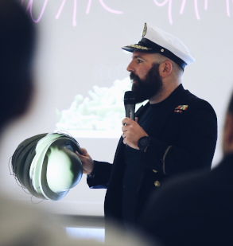

Hands-on Engineering Manager, Team Builder, Problem Solver
I am open to opportunities that scare me.
- Experience
-
Engineering Manager GfK; May 2023 - Present
Team building, maturing and enabling
- Hands on with code everyday, writing, reviewing, pairing, mobbing
- Building a culture of prototyping and scaling
- Managing stakeholder expectations and forming effective teams
- Hiring new teams in remote locations
- Continually finding and acting on opportunities for improvement
Principal Quality Engineer Flipdish; October 2022 - April 2023
Driving Quality Initiatives across Flipdish
- Shifting ownership and accountability of quality to development teams
- Identifying cross-cutting quality initiatives, designing and building solutions
Quality Engineering Manager Auth0; July 2021 - October 2022
Leading the E2E functional testing across multiple teams within the Auth0 product line
- Scaling Quality Engineering teams and tools to grow with the Auth0 business
- Collaborating across multiple product and platform teams to align priorities and roadmaps
- Coaching all Quality Engineers from interns to seniors
- Hands on development work, designing and building sustainable test frameworks and tools
- Defining and building quality metric instrumentation to ensure continuous improvement
Data Science Platform Lead GfK; April 2020 - July 2021
Building tools and processes for mature data science and machine learning lifecycles
- Requirements engineering: turning a known problem "it takes too long to research new insights" into user needs and wants
- Build PoCs for data catalogs, feature stores, MLOps pipelines and monitoring tools
- Building a team of data engineers, machine learning engineers and software engineers
- Building a machine learning validation framework
- Creating libraries in python to simplify data interaction tasks
- Heavy use of Google Cloud Platform
Delivery Lead GfK; August 2019 - April 2020
Accountable for feature release cadence, risk management, removing blockers and fixing processes
- Continuous evaluation of work streams, people and team allocation
- Pairing / Mobbing with Devs, QAs, DevOps to unblock and enable engineers
- Enabling UI/UX, product owners, scrum masters to work with developers and solve the right problems for our clients
- Remove processes that add no value
- Create problem solving environments and remove unnecessary noise
- Increase collaboration by breaking silos, often by physically moving people and working through problems together
Principal Quality Engineer GfK; July 2018 - August 2019
Creating and delivering on the quality vision for GfK's flagship Market Research product
- Hired new quality engineers as the project scaled
- Lead by example, working within one or more development squads. Delivered products that our customers love
- Built clean, reusable frameworks and enabled developers to own the quality of their deliverables
- Paired with Developers, all day, everyday
- Crafted generic component and system CI/CD pipelines
- Ran local and global communities of practice
- Coached other quality engineers
Senior Developer in Test DAZN; May 2017 - July 2019
Delivering highly scalable streaming solutions for sports fans
- Built future proof frameworks from scratch (mocked component, system, consumer contract testing, performance/stress)
- Paired and mobbed with developers and devops engineers
- Hired new SDETs
- Ran the quality community of practice
Senior Developer in Test Camelot Global; April 2015 - May 2017
Building and delivering commercial lottery games for global clients
- Successfully delivered scope to commercial deadlines
- Built, from scratch, component and system test frameworks
- Re-built deployment/packaging for 30+ microservices, moving from RPMs to Docker/K8s environments
- Built test utilities and test microservices to enable regulatory mandated UAT teams
- Built test frameworks to meet randomness regulatory requirements
- Built performance test frameworks and dashboards for customer demos
Developer in Test Trayport; April 2014 - April 2015
Reducing lead time and increasing quality of energy market trading screens and execution platforms
- Built the first subsystem tests to left shift huge legacy manual regression test suites
- Built easy to use test tools for exploratory testers
- Introduced code workshops for exploratory testers
Developer in Test Thales e-Security; November 2011 - April 2014
Working within teams to build, test and manufacture software and hardware network security products
- Learned to work in development teams
- Learned how to build stuff and ask for help
- Learned how to separate testing concerns and automate where possible
- Education
-
University of Portsmouth - UK
BSc (Hons) Mathematics, 2:1
- References
- Available on request